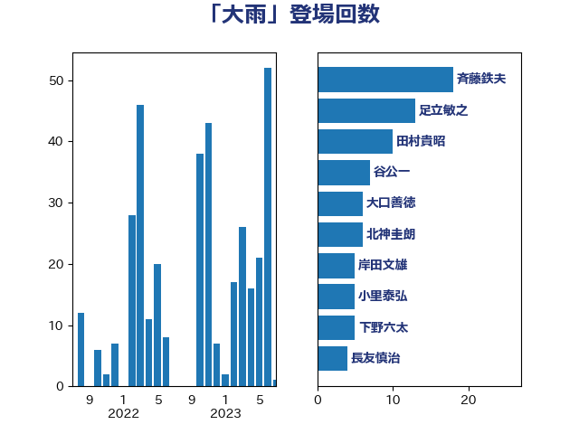

単語「大雨」

| 斉藤鉄夫 | 公明党 | 18 回 |
| 足立敏之 | 自由民主党 | 13 回 |
| 田村貴昭 | 日本共産党 | 10 回 |
| 谷公一 | 自由民主党 | 7 回 |
| 大口善徳 | 公明党 | 6 回 |
| 北神圭朗 | 無所属 | 6 回 |
| 岸田文雄 | 自由民主党 | 5 回 |
| 小里泰弘 | 自由民主党 | 5 回 |
| 下野六太 | 公明党 | 5 回 |
| 長友慎治 | 国民民主党 | 4 回 |
| 野田国義 | 立憲民主党 | 4 回 |
| 竹内真二 | 公明党 | 4 回 |
| 空本誠喜 | 日本維新の会 | 4 回 |
| 大野泰正 | 自由民主党 | 4 回 |
| 中野英幸 | 自由民主党 | 4 回 |
| 高橋千鶴子 | 日本共産党 | 3 回 |
| 金子恭之 | 自由民主党 | 3 回 |
| 野村哲郎 | 自由民主党 | 3 回 |
| 緑川貴士 | 立憲民主党 | 3 回 |
| 神津たけし | 立憲民主党 | 3 回 |
| 石井啓一 | 公明党 | 3 回 |
| 白石洋一 | 立憲民主党 | 3 回 |
| 田中健 | 国民民主党 | 3 回 |
| 牧野たかお | 自由民主党 | 3 回 |
| 瀬戸隆一 | 自由民主党 | 3 回 |
| 江藤拓 | 自由民主党 | 3 回 |
| 森屋隆 | 立憲民主党 | 3 回 |
| 山口壯 | 自由民主党 | 3 回 |
| 塩田博昭 | 公明党 | 3 回 |
| 井坂信彦 | 立憲民主党 | 3 回 |
| 高見康裕 | 自由民主党 | 2 回 |
| 鈴木敦 | 国民民主党 | 2 回 |
| 野上浩太郎 | 自由民主党 | 2 回 |
| 近藤昭一 | 立憲民主党 | 2 回 |
| 豊田俊郎 | 自由民主党 | 2 回 |
| 角田秀穂 | 公明党 | 2 回 |
| 紙智子 | 日本共産党 | 2 回 |
| 田所嘉徳 | 自由民主党 | 2 回 |
| 渡辺猛之 | 自由民主党 | 2 回 |
| 渡辺周 | 立憲民主党 | 2 回 |
| 横沢高徳 | 立憲民主党 | 2 回 |
| 森山浩行 | 立憲民主党 | 2 回 |
| 梶原大介 | 自由民主党 | 2 回 |
| 星野剛士 | 自由民主党 | 2 回 |
| 日下正喜 | 公明党 | 2 回 |
| 打越さく良 | 立憲民主党 | 2 回 |
| 市村浩一郎 | 日本維新の会 | 2 回 |
| 工藤彰三 | 自由民主党 | 2 回 |
| 山口那津男 | 公明党 | 2 回 |
| 小林一大 | 自由民主党 | 2 回 |
| 寺田稔 | 自由民主党 | 2 回 |
| 塩川鉄也 | 日本共産党 | 2 回 |
| 堤かなめ | 立憲民主党 | 2 回 |
| 古川元久 | 国民民主党 | 2 回 |
| 住吉寛紀 | 日本維新の会 | 2 回 |
| 仁比聡平 | 日本共産党 | 2 回 |
| 中川康洋 | 公明党 | 2 回 |
| 中川宏昌 | 公明党 | 2 回 |
| 中島克仁 | 立憲民主党 | 2 回 |
| 高橋光男 | 公明党 | 1 回 |
| 青柳仁士 | 日本維新の会 | 1 回 |
| 青木愛 | 立憲民主党 | 1 回 |
| 青山大人 | 立憲民主党 | 1 回 |
| 青山周平 | 自由民主党 | 1 回 |
| 鈴木俊一 | 自由民主党 | 1 回 |
| 金子恵美 | 立憲民主党 | 1 回 |
| 金城泰邦 | 公明党 | 1 回 |
| 進藤金日子 | 自由民主党 | 1 回 |
| 近藤和也 | 立憲民主党 | 1 回 |
| 西田昭二 | 自由民主党 | 1 回 |
| 西村明宏 | 自由民主党 | 1 回 |
| 西岡秀子 | 国民民主党 | 1 回 |
| 茂木敏充 | 自由民主党 | 1 回 |
| 若松謙維 | 公明党 | 1 回 |
| 芳賀道也 | 国民民主党 | 1 回 |
| 米山隆一 | 立憲民主党 | 1 回 |
| 篠原孝 | 立憲民主党 | 1 回 |
| 穀田恵二 | 日本共産党 | 1 回 |
| 神田潤一 | 自由民主党 | 1 回 |
| 石垣のりこ | 立憲民主党 | 1 回 |
| 石井正弘 | 自由民主党 | 1 回 |
| 田名部匡代 | 立憲民主党 | 1 回 |
| 甘利明 | 自由民主党 | 1 回 |
| 牧島かれん | 自由民主党 | 1 回 |
| 渡辺創 | 立憲民主党 | 1 回 |
| 永井学 | 自由民主党 | 1 回 |
| 比嘉奈津美 | 自由民主党 | 1 回 |
| 榛葉賀津也 | 国民民主党 | 1 回 |
| 根本幸典 | 自由民主党 | 1 回 |
| 柴田巧 | 日本維新の会 | 1 回 |
| 木村英子 | れいわ新選組 | 1 回 |
| 朝日健太郎 | 自由民主党 | 1 回 |
| 庄子賢一 | 公明党 | 1 回 |
| 平木大作 | 公明党 | 1 回 |
| 岬麻紀 | 日本維新の会 | 1 回 |
| 岡本三成 | 公明党 | 1 回 |
| 山添拓 | 日本共産党 | 1 回 |
| 小野寺五典 | 自由民主党 | 1 回 |
| 小森卓郎 | 自由民主党 | 1 回 |
| 小山展弘 | 立憲民主党 | 1 回 |
| 小宮山泰子 | 立憲民主党 | 1 回 |
| 国定勇人 | 自由民主党 | 1 回 |
| 佐藤英道 | 公明党 | 1 回 |
| 伊東信久 | 日本維新の会 | 1 回 |
| 井上哲士 | 日本共産党 | 1 回 |
| 串田誠一 | 日本維新の会 | 1 回 |
| 中野洋昌 | 公明党 | 1 回 |
| 上川陽子 | 自由民主党 | 1 回 |
| ながえ孝子 | 無所属 | 1 回 |